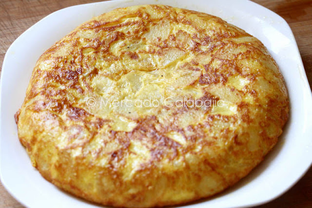

¿Cómo hacer una tortilla de patatas con una olla a presión?
Posible origen de la tortilla de papas:
Se trata de uno de los platos más conocidos y emblemáticos de la cocina española.Una leyenda afirmaba, que el general Tomás de Zumalacárregui,
durante el sitio de Bilbao, inventó la tortilla de patatas como plato sencillo,
rápido y nutritivo con el que saciar las penurias del ejército carlista. Aunque se desconoce si es cierto,
se decía que la tortilla comenzó a difundirse durante las primeras Guerras Carlistas.
Otra versión de la leyenda afirmaba que lo inventó una anónima ama de casa navarra, en cuya casa paró el mencionado Zumalacárregui,
la señora, que era pobre y lo único que tenía eran huevos, cebolla y patatas,
acabó haciendo un revuelto con todo ello, revuelto que gustó mucho al general,
que luego la popularizaría entre sus tropas.

Ingredientes:
Para 3 personas
4 huevos.
4 patatas.
1/2 cebolla.
Sal y aceite de oliva virgen extra.
Preparación:
Pelar y cortar las patatas en rodajas finas.
Picar la cebolla.
En la olla rápida, cubrir el fondo con aceite de oliva. Cuando esté caliente,
añadir las patatas y remover para que queden bien impregnadas.
Incorporar la cebolla picada, tapar y, una vez que la olla
haya alcanzado la máxima presión, cocer dos minutos.
Retirar del fuego, eliminar la presión, destapar y sacar las patatas.
Rascar el fondo de la olla para no desaprovechar el sabor de la patata caramelizada.
Batir los huevos, incorporar la patata y cocinar en la sartén
vuelta y vuelta con un poco de aceite como una tortilla normal.